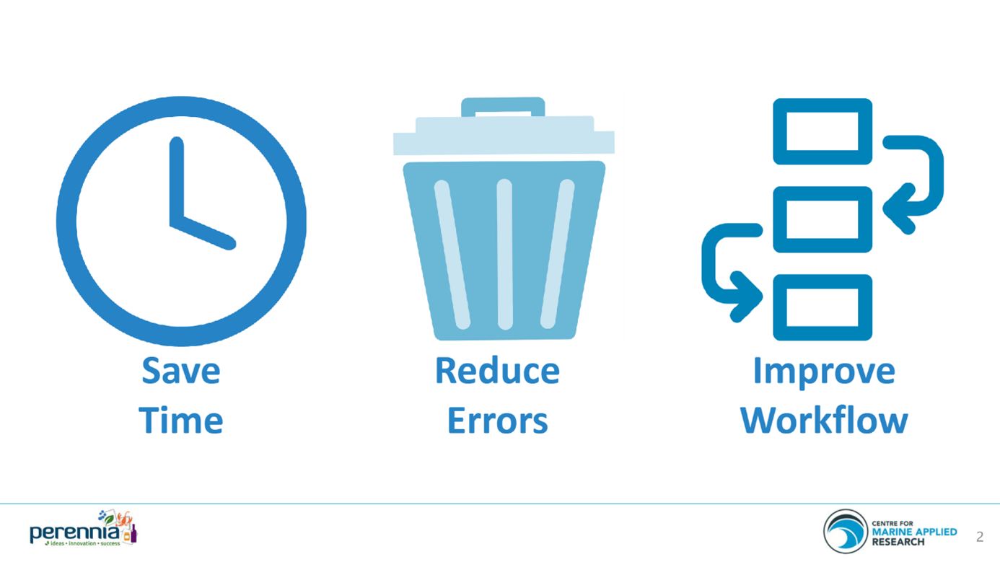

#create data frame
df <- data.frame(y=c(6, 8, 12, 14, 14, 15, 17, 22, 24, 23),
x1=c(2, 5, 4, 3, 4, 6, 7, 5, 8, 9),
x2=c(14, 12, 12, 13, 7, 8, 7, 4, 6, 5))
#view data frame
df
## y x1 x2
## 1 6 2 14
## 2 8 5 12
## 3 12 4 12
## 4 14 3 13
## 5 14 4 7
## 6 15 6 8
## 7 17 7 7
## 8 22 5 4
## 9 24 8 6
## 10 23 9 51 Assignment 1
2 About Me
I am Canseza Avağ Erdurak. I graduated from Management Information Systems, Boğaziçi University in 2011. Since then, I always dreamed about having a master’s degree. Being a MEFIAN made my dream come through. I am super excited to be a part of this programme. I was less interested in coding staff when I was an undergradute. I’m ended up like coding is not that boring after I started to work as a BI Developer. Being a BI Developer restricted me in a way that I could not involve in building a structure of the reports I am working on. I decided to choose a path that I could get my hands dirty in both BI and DWH jobs. I work as a BI Engineer in Pegasus Airlines since July 2018. It started to feel like I should step in the field of AI to make my job better and to be more satisfied at work. As a BI Engineer, I only provide data and support for architectural structure in AI Projects. However, I want to initiate and lead AI projects on my own. I believe that I am passionate, intellectually capable, and prepared to set out on this exhilarating and challenging path. I look forward to learn exploratory data analysis, machine learning and automation in R.
Here is the link of my linkedin profile : https://www.linkedin.com/in/cansezaavag/
3 RStudio Global 2022 Conference Talks : Save an Ocean of Time
The speaker, Danielle Dempsey works for CMAR that has over 250 oceanographic sensors deployed around the coast of Nova Scotia, Canada. Together, these generate around 4 million rows of data every year. Her challenge was to compile all of data stored in Excel files in different formats into a nice, tidy format that they could post online for any interested stakeholder to download and use in their own analysis.

She mentions about how skeptical her manager was at first, since there’s an existing process that’s already “good enough”. However, she was decided not to proceed old-fashioned methods like copy+paste. She was not confident in data wrangling and package development skills. She spent time in coding to save time. She used Tidyverse packages mostly in her project. It took 9 months rather than 2 years to complete the task. If she didn’t change the way how the work is done, she couln’t get the results below. Skills that you learn working on one coding project are often transferable to other projects. She has used packages and skills she developed for further projects. She says how easier it is to train new people getting them on board. Errors can pop up anywhere in data since humans are involved. Writing code makes to find and reduce errors in your dataset. It makes get clients more confident in data and make analysis with that data more reliable. Automate your data wrangling make your workflow more traceable and reproducible especially compared to copying and pasting. At the end, she mentions about how her manager changed her mind over streamlining a workflow. Her manager made him a hand-made present shaped as Super “R” so that she thought “R can do anything that we put our minds to.” It think this metaphor she puts made me chose Danielle’s talk for the assignment : “Making a salad left in the fridge. Most of the time, it tastes ok but eventually you will get something that doesn’t taste quite right. Because you have no record of what went into that salad it’s really hard to tell what exactly is making it taste funny, and it’s also hard to avoid making the same mistake in the future. You can’t take the dressing back out of the salad. In contrast, writing code is like writing and following a recipe. You can follow it step by step to get a delicious salad every time. As a bonus, you can give that recipe to a friend so they can make their own salad or help you make dinner.” This conference talk made me impressed and motivated about my philosophy at work. At first, I go over process of how clients complete an existing job. Then, I start writing SQL codes to automate workflow. When clients are totally on board with me, they bring on new projects more reluctantly to work for. It has also changed the way how they make use of DWH/BI skills on processes and help them make more informative decisions about work.
Video link : https://www.rstudio.com/conference/2022/talks/save-ocean-of-time-streamline/
Talk materials’ link : https://github.com/dempsey-CMAR/2022_rstudio_conf
4 3 R Posts Relevant to My Interests
4.1 Tidyverse
When I started to watch conference talk that I mentioned above, I realized I could do anything related to data wrangling I did so far in Pegasus by using R. So, I decided to elaborate on this article. Tidyverse has 8 core packages named ggplot2, dplyr, tidyr, readr, purrr, tibble, stringr and forcats.
- Data Visualization and Exploration
- ggplot2 is used to create data visualizations like bar charts, pie charts, histograms, scatterplots, error charts, etc.
- Data Wrangling and Transformation
Dplyr is known for data manipulation. It has five important functions namely mutate(), select(), filter(), summarise() and arrange(). These functions are used with group_by().
Tidyr helps create clean data.
Stringr has many functions for data cleaning and data preparation. All functions in this library starts with “str” and take a string vector as a first argument.
Forcats handles issues like changes the orders of values in vectors, reordering the vectors, etc.
- Data Import and Management
Readr helps read rectangular data such as that with file formats tsv, csv, delim, fwf, etc. in a simple and speedy way.
Tibble is a form of a data.frame which includes the useful parts of it and discards the parts that are not so important.
- Functional Programming
- Purrr turns messed-up codes into simpler ones.
Article : https://www.geeksforgeeks.org/what-are-the-tidyverse-packages-in-r-language/
4.2 Uncover the R Applications
I watched many conference talks so that I could chose one for this assignment. These talks make me wonder why R Programming Language is used by top companies from various industries like banking, e-commerce, finance, etc.
Applications of R Programming :
Finance : R helps financial institutions perform downside risk measurement, adjust risk performance and utilize visualizations like candlestick charts, density plots, drawdown plots, etc. Time-series statistical processes of R are used to model the movement of financial industries’ stock-market and predict the prices of shares. R provides financial data mining capabilities through its packages like quantmod, pdfetch, TFX, pwt, etc. Rshiny helps extract data from online assets.
Banking : R is most widely used for credit risk modeling and other forms of risk analytics. Hadoop is an ally of R in the fields like analysis of customer quality, customer segmentation, and retention.
Healthcare : R helps perform pre-clinical trials and analyze the drug-safety data. R is also used for statistical modeling in the field of epidemiology, where data scientists analyze and predict the spread of diseases.
Social Media : Some of the important statistical tools like sentiment analysis and other forms of social media data mining are used with R. Social media is used for potential customer segmentation and targeting them as new customers.
E-commerce : E-commerce companies use R is for analyzing cross-selling products to their customers. Various statistical procedures like linear modeling are necessary to analyze the purchases made by the customers as well as in predicting product sales. Furthermore, companies use R for carrying out A/B testing analysis across the pages of their products.
Manufacturing : Analyzing customer sentiment helps them optimize their product according to trending consumer interests and also to match their production volume to varying market demand. They also use R to minimize their production costs and maximize profits.
4.3 K-Fold Cross Validation in R (Step-by-Step)
In AI projects, a few models are run to figure out which one is the best for prediction.
K-fold cross validation is widely used method for model verification.
Following dataset is created.
Multiple linear regression model is fit to the dataset. k-fold cross validation with k=5 is performed to evaluate the model performance.
The 3 metrics, RMSE, R-squared, and MAE are used to decide which model is the best.
RMSE : the average difference between the predictions made by the model and the actual observations.
Rsquared : the correlation between the predictions made by the model and the actual observations.
MAE : the average absolute difference between the predictions made by the model and the actual observations.
library(caret)
## Zorunlu paket yükleniyor: ggplot2
## Zorunlu paket yükleniyor: lattice
#specify the cross-validation method
ctrl <- trainControl(method = "cv", number = 5)
#fit a regression model and use k-fold CV to evaluate performance
model <- train(y ~ x1 + x2, data = df, method = "lm", trControl = ctrl)
#view summary of k-fold CV
print(model)
## Linear Regression
##
## 10 samples
## 2 predictor
##
## No pre-processing
## Resampling: Cross-Validated (5 fold)
## Summary of sample sizes: 8, 8, 8, 8, 8
## Resampling results:
##
## RMSE Rsquared MAE
## 3.734221 1 3.499655
##
## Tuning parameter 'intercept' was held constant at a value of TRUEThe final model formula is :
y = 21.2672 + 0.7803*(x1) – 1.12538(x2)
#view final model
model$finalModel
##
## Call:
## lm(formula = .outcome ~ ., data = dat)
##
## Coefficients:
## (Intercept) x1 x2
## 21.2672 0.7803 -1.1253The following code displays the model predictions made for each fold :
#view predictions for each fold
model$resample
## RMSE Rsquared MAE Resample
## 1 4.228394 1 4.219753 Fold1
## 2 5.965809 1 5.556588 Fold2
## 3 4.267831 1 4.090775 Fold3
## 4 2.657803 1 2.523437 Fold4
## 5 1.551268 1 1.107723 Fold5Article : https://www.statology.org/k-fold-cross-validation-in-r/